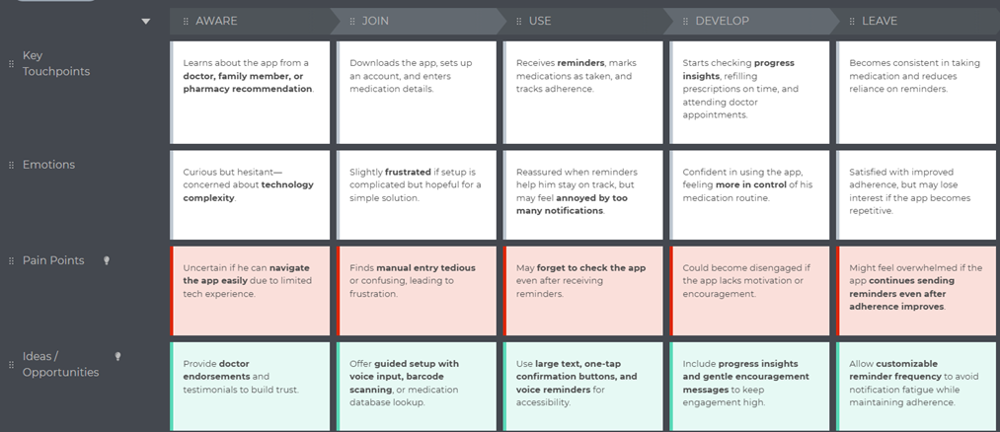
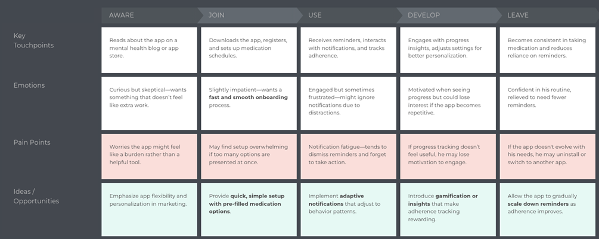

This research focuses on understanding the challenges of medication adherence among individuals with chronic diseases and identifying design strategies for a health companion app. By analyzing existing studies, including a quantitative survey conducted in France, the research highlights key user needs, current medication management practices, and the importance of personalized solutions. Addressing these challenges through an intuitive and effective application can improve medication adherence and overall health outcomes. The study reveals that chronic diseases requiring long-term treatment are prevalent, with 40% of individuals over the age of 16 in France affected. Current medication management practices vary, with 43% of patients using a pillbox, indicating a preference for structured tracking tools. However, while 79% claimed to know all their medications, non-adherence rates suggest a gap between knowledge and consistent usage. The study concludes that personalized reminders could significantly improve adherence. Rather than generic alerts, reminders tailored to individual routines and past adherence patterns would be more effective in addressing forgetfulness and ensuring long-term engagement. By integrating insights from this research, the proposed health companion app should focus on adaptive reminders, intuitive medication tracking, and a user-friendly interface. Implementing these features can bridge the gap between awareness and adherence, providing individuals with chronic diseases with a more reliable system for managing their treatments at home.
The survey results helped create user personas representing different types of users with diverse needs. This approach allowed us to focus on the most common pain points and design solutions accordingly.
A typical user journey was mapped to understand how users interact with the app and the emotional responses at different stages.
 Low-fidelity wireframes were created to visualize the app’s structure before moving into high-fidelity design.